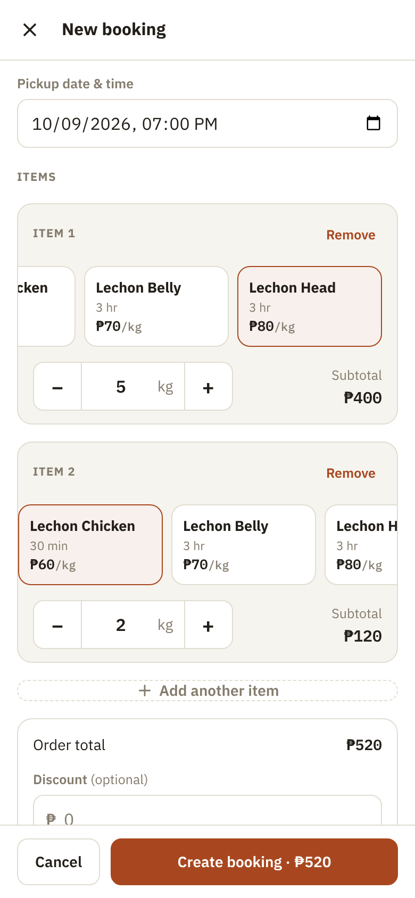
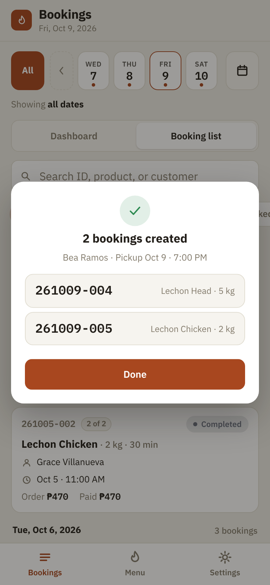
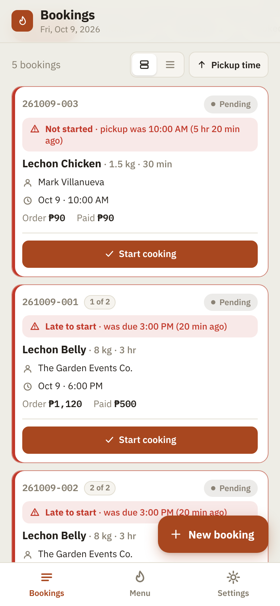
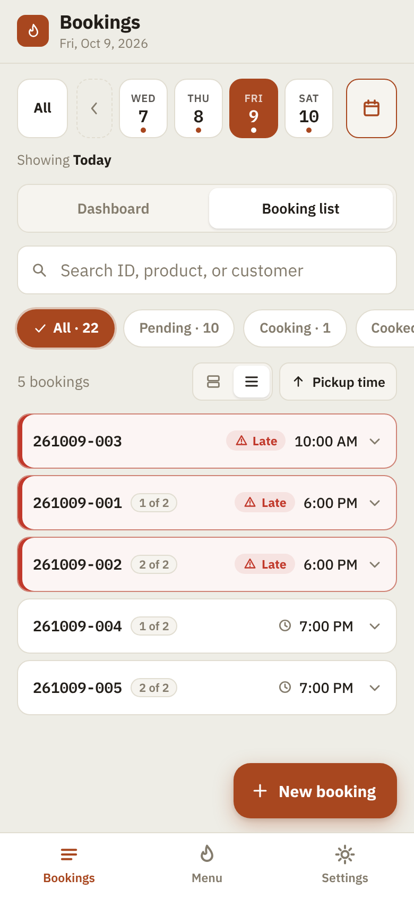
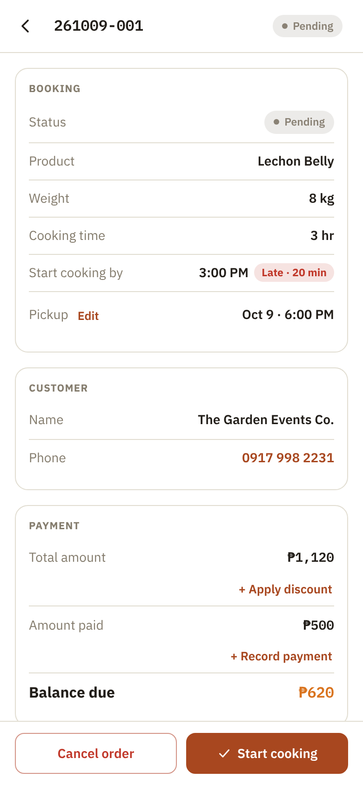
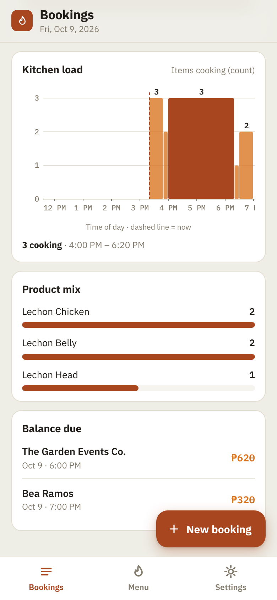

Mobile app
Offline booking and ordering app for roasting businesses
Roasting businesses take orders days ahead, each with a pickup time, and every product needs hours on the roaster first. When those bookings are tracked by hand, records get lost, forgotten orders aren't noticed until the customer arrives, and the owner has no easy way to tell if the kitchen can take on another booking. RoastIT fixes this by replacing the handwritten records, flagging any booking that should already be cooking, and showing the kitchen's load hour by hour.
.NET MAUI Blazor Hybrid
C#
SQLite
EF Core
xUnit
HTML / CSS
Android
In the app
From a new booking to the kitchen load chart
-

01Add a bookingPick the pickup time, the products and their weight. The total uses the per-kilo prices. -

02Booking IDs issuedEach product gets its own booking ID, ready to write on the order slip. -

03Late-to-start alertA Pending booking past its start time (pickup minus cooking time) turns red. -

04Spot late bookings fastThe compact list tags every late booking, so nothing gets forgotten. -

05Start cooking byThe booking detail shows when it should have gone on the roaster, with payments and balance. -

06Kitchen loadHow many items are roasting at each hour. Tap a bar to check a time slot.
The problem
Orders are taken days ahead, and every product spends hours on the roaster
- Manual recordingTotals were added up by hand. Bookings, weights, prices, payments and balances were written down and totalled on paper. Entries got lost or misread, and there was no reliable history of who paid what.
- Missed bookingsNothing said a roast should already have started. A pending order could sit forgotten until the customer arrived to pick it up.
- Kitchen loadA list of pickup times doesn't show overlap. The owner couldn't easily tell whether a new booking at a given pickup time would fit, or whether the roasters would already be full.
The solution
Three problems, three features
01 · Records
Automated booking records
- One ID per product line in the form
YYMMDD-NNN, for example261009-001. - Totals come from the menu. Quantities are weights in kilos and prices are per kilo, so nothing is added up by hand.
- Clear status — each booking moves through Pending, Cooking, Cooked and Completed.
- Payments, discounts and balances are tracked per order, and every change is saved in a history.
- Daily dashboard showing revenue, amount collected, balance due and which products are selling.
- Protected data — a PIN lock, an exportable backup file, and an automatic hourly CSV of nearby bookings.
02 · Alerts
Missed-booking alerts
- Start time is computed. Each menu item has a cooking time, so every booking has a start time of pickup minus cooking time.
- Flagged the moment it's late. A Pending booking past that time gets a red stripe, a line such as “Late to start · was due 3:00 PM (20 min ago)”, and a highlighted “Start cooking” button.
- Escalates at pickup. If the pickup time passes too, it reads “Not started · pickup was …”.
- Always current. The list updates every minute and whenever the app is reopened, and tapping “Start cooking” clears the alert.
- Example: a 2-hour Lechon Belly for a 5:00 PM pickup is flagged at exactly 3:00 PM if it hasn't been started.
03 · Capacity
Kitchen load chart
- Items on the roasters, per hour, for today or any future date.
- Cooking bookings count from the time they actually started.
- Pending bookings count from their planned start until pickup. Late ones are moved to start “now”, so the chart shows the real load.
- Tap a bar for details such as “3 cooking · 1:00 PM – 3:00 PM”.
- How it's used: when a customer asks for a 4:00 PM pickup, the owner opens that date and checks the hours before it. If the roasters are already at capacity, the owner can suggest another time before accepting. The app shows the load and the owner makes the call.
Technical approach
A standalone app instead of a server
- Web skills, native appBlazor Hybrid draws the screens with HTML and CSS inside a native shell. Every screen was designed first as an HTML prototype, and its CSS carried straight into the app without a CSS framework.
- Offline by designBookings live in SQLite on the phone, accessed through EF Core. Schema updates run on the device at startup, after a safety copy of the database is saved.
- Testable rulesBooking IDs, balances, the late-start alert and the kitchen load all live in a plain C# library with no UI or database code. xUnit tests run them against real SQLite, with no phone or emulator needed.
- Built for the shopMoney is stored as whole centavos to avoid rounding errors, and “today” always follows Manila time, even if the phone's time zone is set wrong.
Outcome
What changed at the counter
- One accurate record replaces handwritten booking notes.
- Forgotten roasts show up the minute they are late, not when the customer arrives.
- New bookings are accepted based on what the kitchen can actually handle at that hour.
RoastIT is designed around how roasted-product businesses work: orders tied to pickup times, products that take hours to cook, and a kitchen with limited roaster space.